EY Digital Hub
- Role
- Digital Hub Lead
- Scope
- Service design
- Timeline
- 14 months, 2019–2020
What exactly I did
Support cost
Projected: lower back-office support cost, from fewer tickets and calls.
Employee NPS
Projected employee NPS.
Productivity
Projected: more productive employees.
Time saved
Projected: saved per employee per month.
These are projected numbers from the proposal, not measured results.
Situation
IT support for people who can’t wait
EY wanted invisible IT support: proactive, preventive and personal, for employees with no time to spare.
Situation
IT support for people who can’t wait
EY wanted invisible IT support: proactive, preventive and personal, for employees with no time to spare.
Who calls IT, and when it hurts
We started with the business: stakeholder sessions and workshops. Then the people: more than 30 surveys, interviews, past incidents and industry research. Across Advisory, Assurance, Tax and the rest, the same picture came back: an extremely high pace, client-facing work with urgent demands, a busy season, flexible schedules and locations, and people used to things that simply work.
Discovery findings
Most common issues
Share of issue tickets.
Most common requests
Share of request tickets.
Main use cases
The cases the journeys had to cover.
Siloed channels
Channels to watch for each issue.
Dropped cases
Cold handoffs and dropped cases.
Dead ends
No timeline or status information, especially on requests.
Repeated checks
Duplicate verifications, long troubleshooting, low-quality feedback.
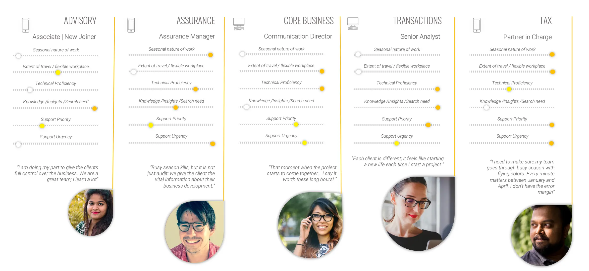
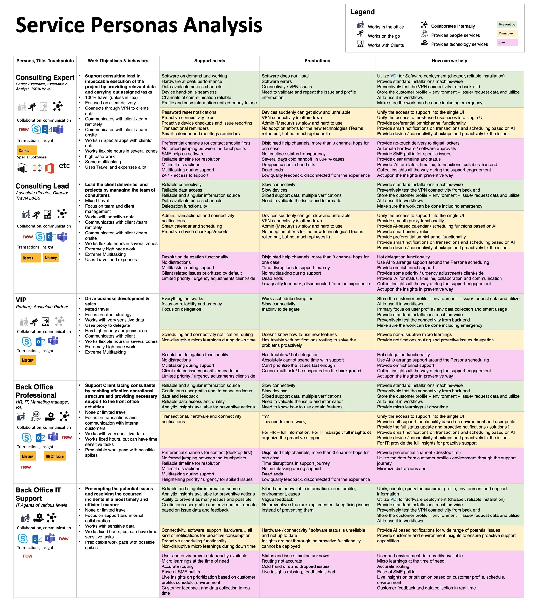
Task
A proposal EY could buy
The service, the MVP journeys and a five-year plan, from a team of five.
Task
A proposal EY could buy
The service, the MVP journeys and a five-year plan, from a team of five.
Turn the brief into a proposal EY could buy: the service, the journeys for an MVP, and a five-year plan to get there. I led the Digital Hub team (business analyst, technical architect, UX and UI), one of five cross-functional teams on the bid. I ran it with my work sequence: business goals, user needs, global goals, journeys and tech, then experience and UI.
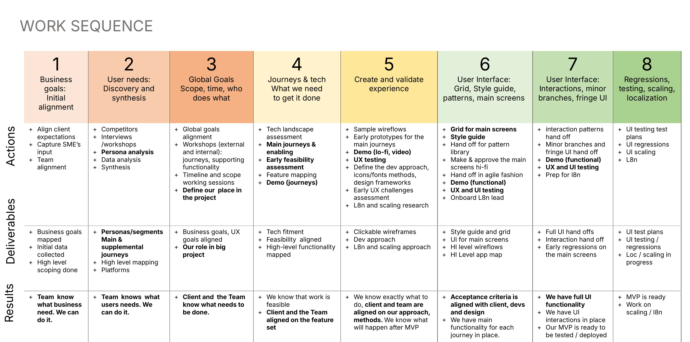
Action
Fix it before they notice
A support model where most problems disappear, journeys checked against real systems, and a prototype people could try.
Action
Fix it before they notice
A support model where most problems disappear, journeys checked against real systems, and a prototype people could try.
Most problems never reach a person
Most IT cases get fixed before anyone notices. Requests like installations go through self-service. Issues meet a self-help system driven by an AI bot. Only the smallest share becomes a ticket for a real person. At every step, data comes back to make support more personal and more automatic.
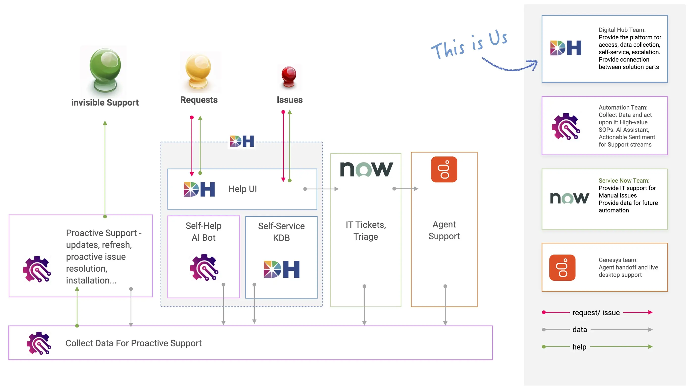
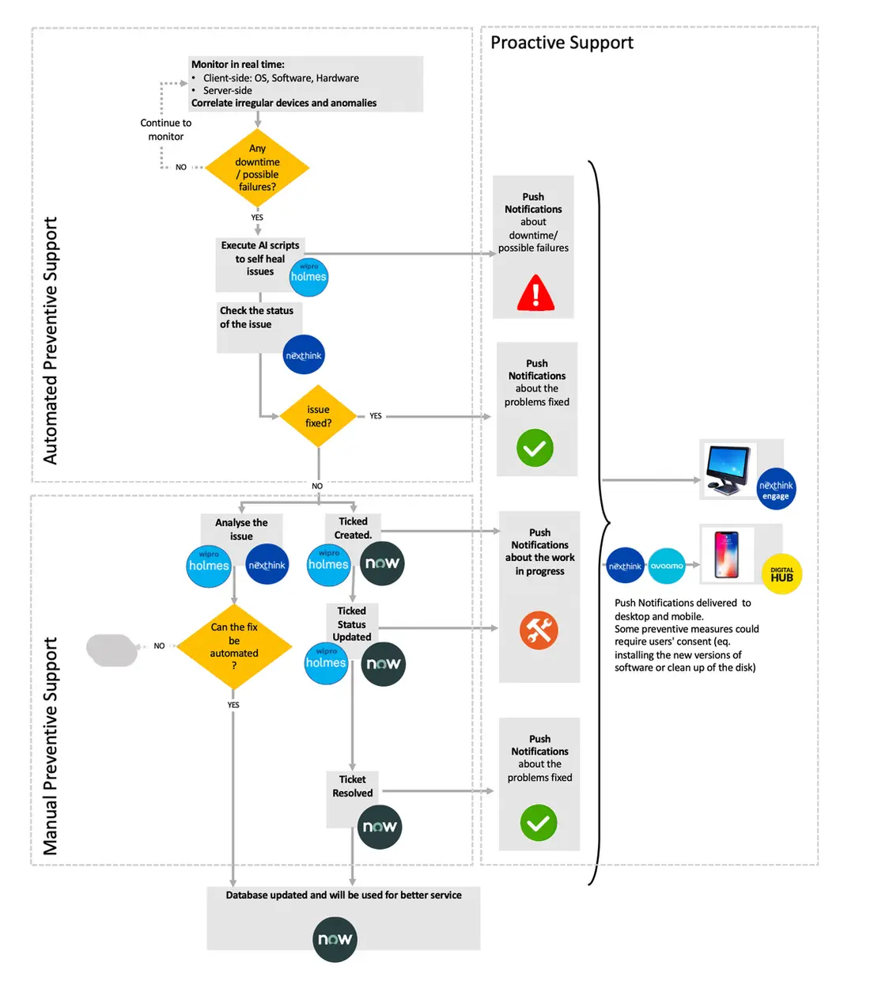
Laptop refresh, end to end
Roberta gets a notification that her laptop is due. She picks a bundle recommended for her role, checks out, and chooses a time to collect it from a digital locker. Under every step sits the system that does the job, from the HR database to the carrier, so the journey was checked for feasibility before anyone drew a screen.
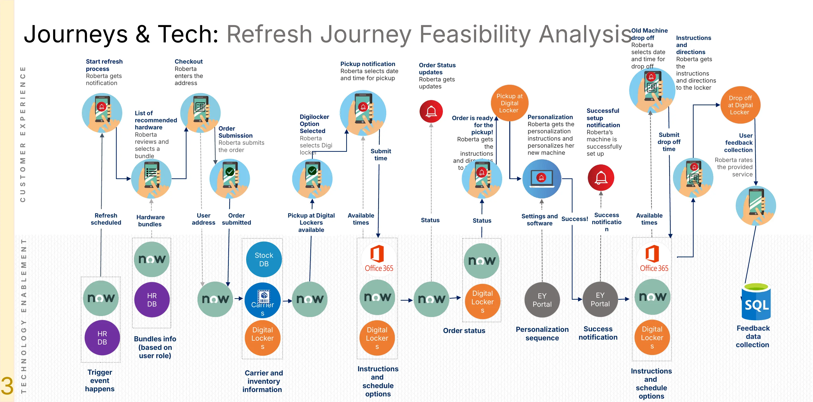
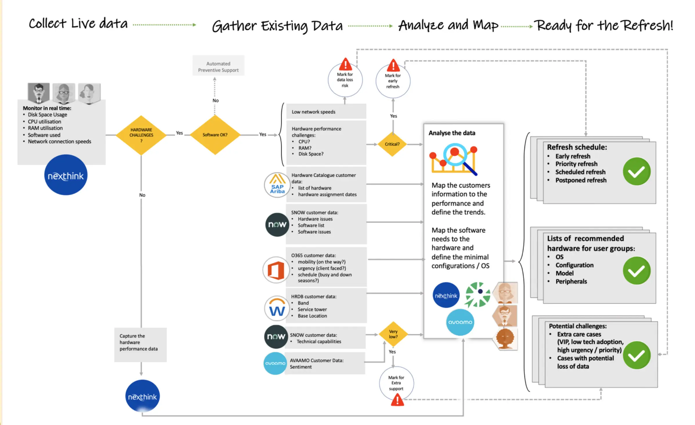
From wireframes to a working prototype
I wireframed every journey, demoed it to stakeholders and tested it with a focus group from each segment, version after version. The screens went into one application map so shared steps stayed the same everywhere.
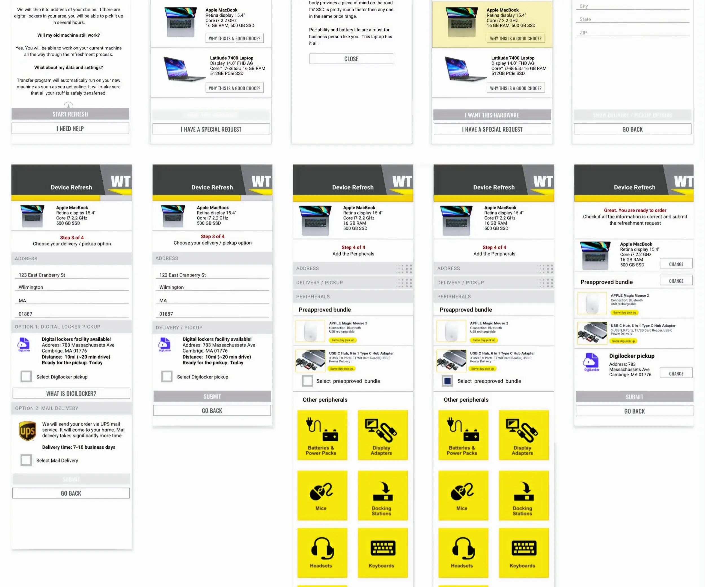
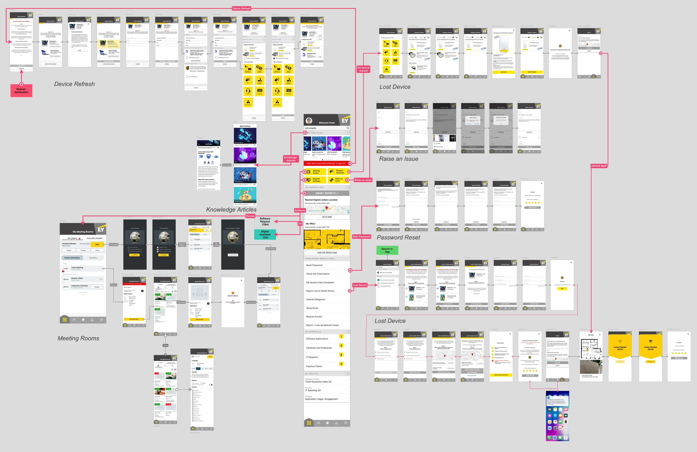
Material, then hand-off
The UI follows Material Design with few custom elements, so developers could build fast. Detailed documentation and a Zeplin hand-off covered every screen.
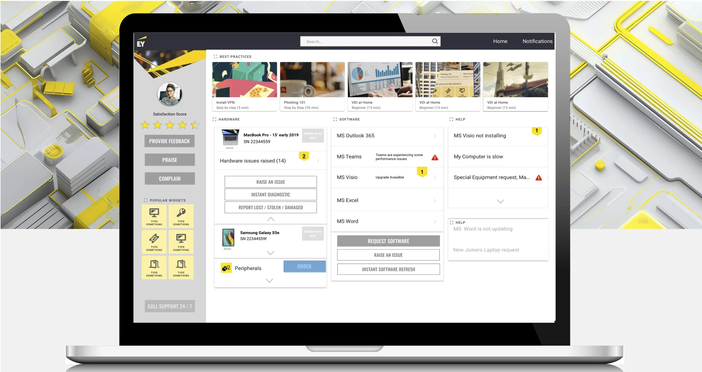
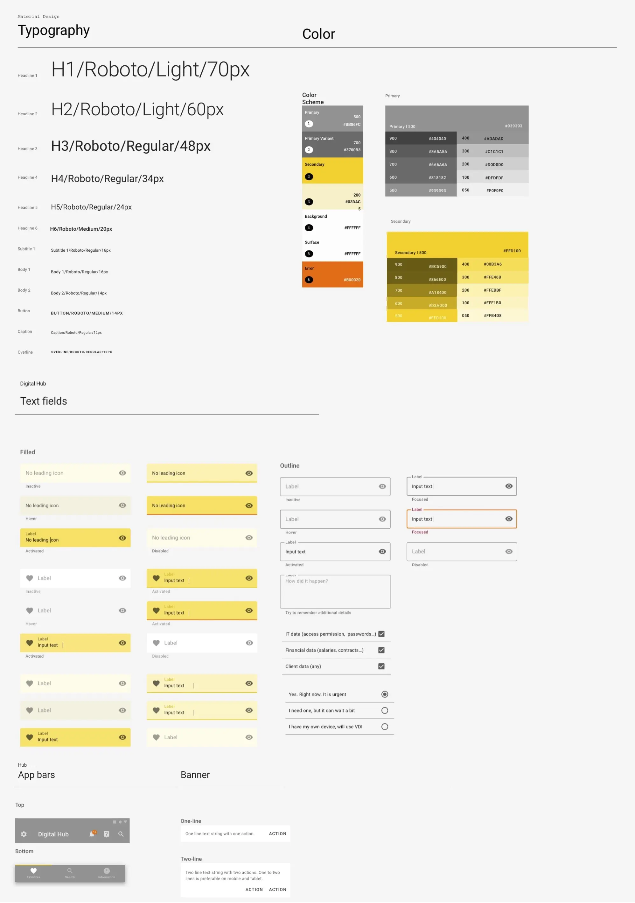
Self-help that fixes things
Instead of a ticket, a menu of scripts that fix the problem on the laptop itself, from an account that keeps locking to other common faults.
Listening to how people feel
Chat text, ticket analytics, call recordings and device logs flow into one pipeline that measures sentiment, so the team sees where support hurts.
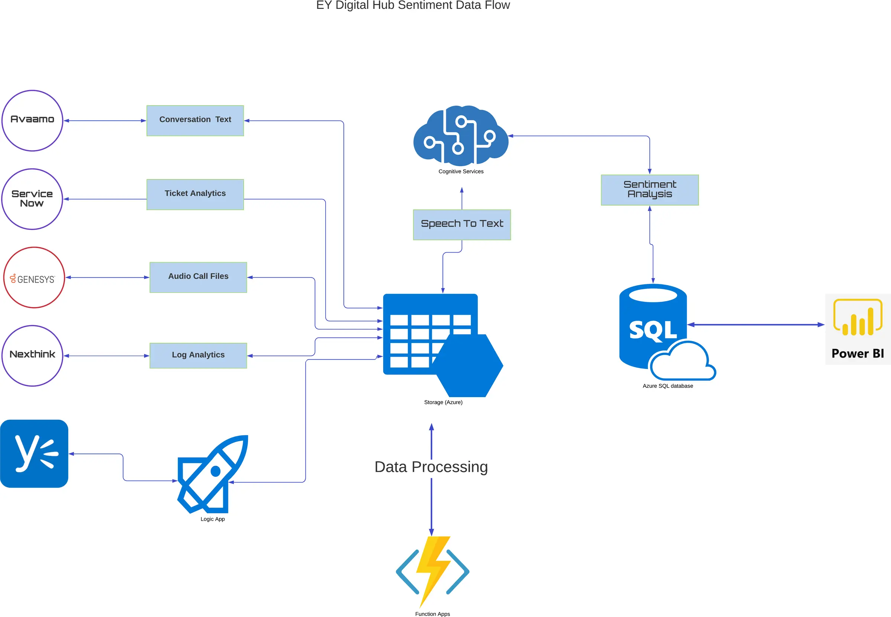
Result
A five-year plan, projected
Discovery, MVP journeys, delivery and resource plans. The numbers are projections; implementation went ahead without me.
Result
A five-year plan, projected
Discovery, MVP journeys, delivery and resource plans. The numbers are projections; implementation went ahead without me.
The team delivered discovery and synthesis, MVP journeys, a detailed proposal for a five-year implementation, a delivery plan and a resource plan. The proposal projected these outcomes. Implementation went ahead without me, so these are the plan’s numbers, not measured results.
Support cost
Projected: lower back-office support cost, from fewer tickets and calls.
Employee NPS
Projected employee NPS.
Productivity
Projected: more productive employees.
Time saved
Projected: saved per employee per month.
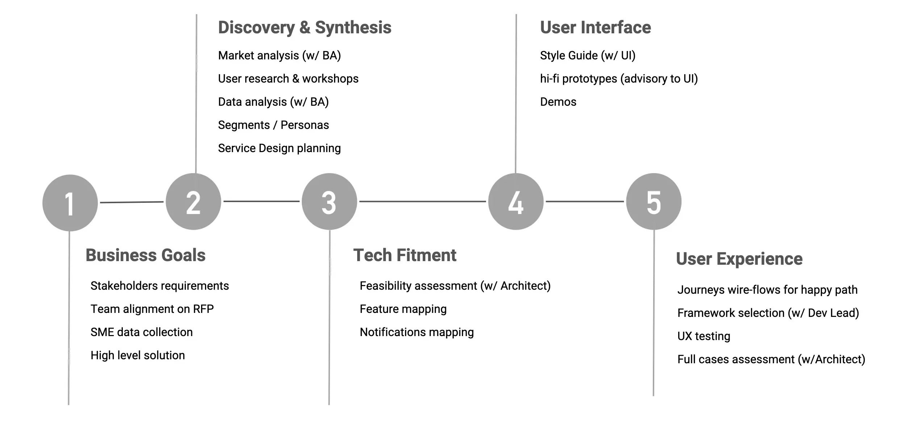
Lessons learned
What this project taught me
Three rules from a proposal.
Lessons learned
What this project taught me
Three rules from a proposal.
The day-in-the-life video kept the room on the big picture instead of the details.
The best support is the ticket that never gets opened.
A journey mapped to real systems is a promise you can keep.